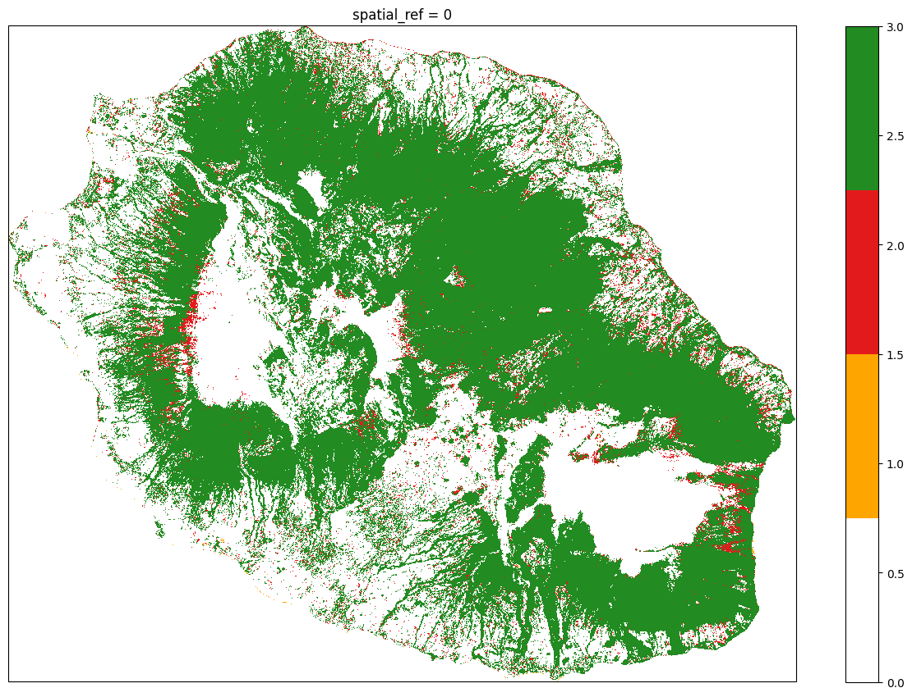
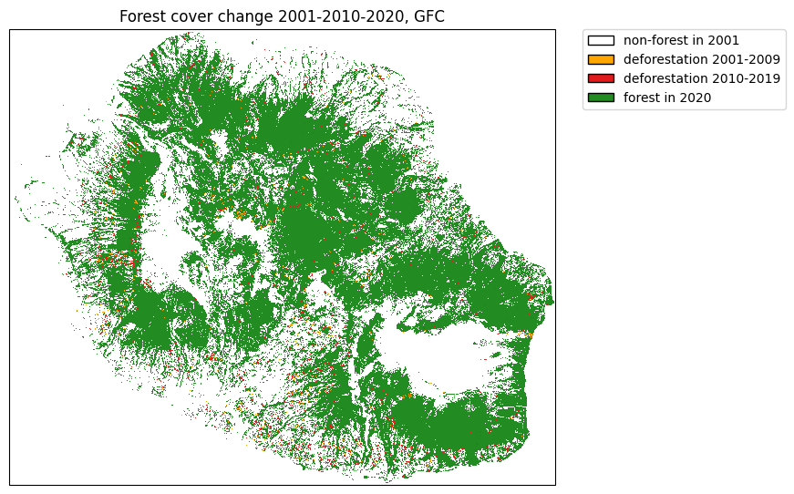
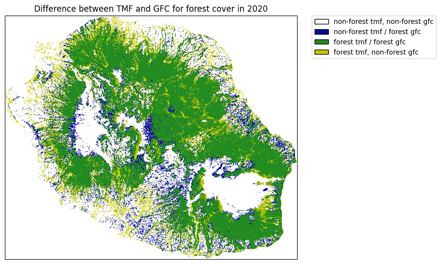
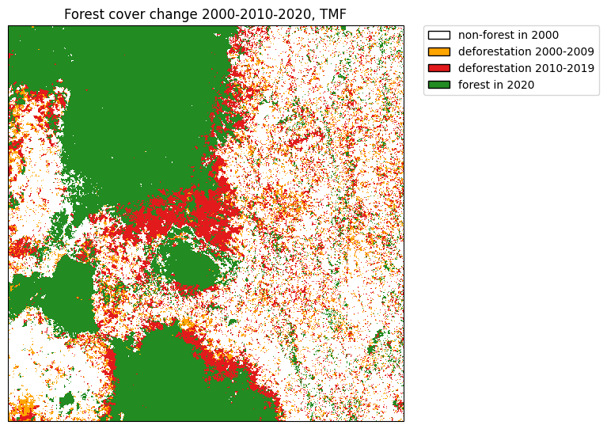

Get started¶
Get forest cover change from TMF¶
The function .get_fcc() can be used to download forest cover change from the Tropical Moist Forest product. We will use the Reunion Island (isocode “REU”) as a case study.
[1]:
import ee
import geefcc
[2]:
# Initialize GEE
ee.Initialize(project="forestatrisk", opt_url="https://earthengine-highvolume.googleapis.com")
[3]:
# Download data from GEE
geefcc.get_fcc(
aoi="REU",
years=[2000, 2010, 2020],
source="tmf",
tile_size=0.5,
output_file="out_tmf/forest_tmf.tif",
)
get_fcc running, 3 tiles ....
[4]:
import matplotlib.pyplot as plt
import cartopy.crs as ccrs
import rioxarray
[5]:
# Load data
forest_tmf = rioxarray.open_rasterio("out_tmf/forest_tmf.tif")
forest_tmf
[5]:
<xarray.DataArray (band: 3, y: 1923, x: 2305)> Size: 13MB
[13297545 values with dtype=int8]
Coordinates:
* band (band) int64 24B 1 2 3
* x (x) float64 18kB 55.22 55.22 55.22 55.22 ... 55.84 55.84 55.84
* y (y) float64 15kB -20.87 -20.87 -20.87 ... -21.39 -21.39 -21.39
spatial_ref int64 8B 0
Attributes:
AREA_OR_POINT: Area
scale_factor: 1.0
add_offset: 0.0[6]:
# Computing the sum
fcc_tmf = forest_tmf.sum(dim="band")
fcc_tmf
[6]:
<xarray.DataArray (y: 1923, x: 2305)> Size: 35MB
array([[0, 0, 0, ..., 0, 0, 0],
[0, 0, 0, ..., 0, 0, 0],
[0, 0, 0, ..., 0, 0, 0],
...,
[0, 0, 0, ..., 0, 0, 0],
[0, 0, 0, ..., 0, 0, 0],
[0, 0, 0, ..., 0, 0, 0]])
Coordinates:
* x (x) float64 18kB 55.22 55.22 55.22 55.22 ... 55.84 55.84 55.84
* y (y) float64 15kB -20.87 -20.87 -20.87 ... -21.39 -21.39 -21.39
spatial_ref int64 8B 0[27]:
# Colors
from matplotlib.colors import ListedColormap
cols=[(255, 165, 0, 255), (227, 26, 28, 255), (34, 139, 34, 255)]
colors = [(1, 1, 1, 0)] # transparent white for 0
cmax = 255.0 # float for division
for col in cols:
col_class = tuple([i / cmax for i in col])
colors.append(col_class)
color_map = ListedColormap(colors)
# Labels
import matplotlib.patches as mpatches
labels = {0: "non-forest in 2000", 1:"deforestation 2000-2009", 2:"deforestation 2010-2019", 3:"forest in 2020"}
patches =[mpatches.Patch(facecolor=col, edgecolor="black", label=labels[i]) for (i, col) in enumerate(colors)]
[39]:
# Plot
fig = plt.figure(figsize=[7, 5])
ax = fig.add_axes([0, 0, 1, 1], projection=ccrs.PlateCarree())
raster_image = fcc_tmf.plot(ax=ax, cmap=color_map, add_colorbar=False)
plt.title("Forest cover change 2000-2010-2020, TMF")
plt.legend(handles=patches, bbox_to_anchor=(1.05, 1), loc=2, borderaxespad=0.)
plt.show()

Compare with forest cover change from GFC¶
[44]:
# Get data from GEE
geefcc.get_fcc(
aoi="REU",
years=[2001, 2010, 2020], # Here, first year must be 2001 (1st Jan)
source="gfc",
perc=50,
tile_size=0.5,
output_file="out_gfc_50/forest_gfc_50.tif",
)
get_fcc running, 3 tiles ....
[29]:
# Load data
forest_gfc = rioxarray.open_rasterio("out_gfc_50/forest_gfc_50.tif")
fcc_gfc = forest_gfc.sum(dim="band")
[34]:
# Plot
fig = plt.figure(figsize=[7, 5])
ax = fig.add_axes([0, 0, 1, 1], projection=ccrs.PlateCarree())
raster_image = fcc_gfc.plot(ax=ax, cmap=color_map, add_colorbar=False)
plt.title("Forest cover change 2001-2010-2020, GFC")
labels = {0: "non-forest in 2001", 1:"deforestation 2001-2009", 2:"deforestation 2010-2019", 3:"forest in 2020"}
patches =[mpatches.Patch(facecolor=col, edgecolor="black", label=labels[i]) for (i, col) in enumerate(colors)]
plt.legend(handles=patches, bbox_to_anchor=(1.05, 1), loc=2, borderaxespad=0.)
plt.show()

Comparing forest cover in 2020 between TMF and GFC¶
[94]:
# Computing difference and sum
forest_diff = forest_tmf.sel(band=3) - forest_gfc.sel(band=3)
forest_sum = forest_tmf.sel(band=3) + forest_gfc.sel(band=3)
forest_diff = forest_diff.where(forest_sum != 0, -2)
[94]:
<xarray.DataArray ()> Size: 1B
array(-2, dtype=int8)
Coordinates:
band int64 8B 3
spatial_ref int64 8B 0[128]:
# Colors
cols=[(10, 10, 150, 255), (34, 139, 34, 255), (200, 200, 0, 255)]
colors = [(1, 1, 1, 0)] # transparent white for -2
cmax = 255.0 # float for division
for col in cols:
col_class = tuple([i / cmax for i in col])
colors.append(col_class)
color_map = ListedColormap(colors)
[129]:
# Labels
labels = {0: "non-forest tmf, non-forest gfc", 1:"non-forest tmf / forest gfc",
2:"forest tmf / forest gfc", 3:"forest tmf, non-forest gfc"}
patches =[mpatches.Patch(facecolor=col, edgecolor="black", label=labels[i]) for (i, col) in enumerate(colors)]
[130]:
# Plot
fig = plt.figure(figsize=[7, 5])
ax = fig.add_axes([0, 0, 1, 1], projection=ccrs.PlateCarree())
raster_image = forest_diff.plot(ax=ax, cmap=color_map, add_colorbar=False)
plt.title("Difference between TMF and GFC for forest cover in 2020")
plt.legend(handles=patches, bbox_to_anchor=(1.05, 1), loc=2, borderaxespad=0.)
plt.show()

Differences are quite important between the two data-sets. This might change depending on the tree cover threshold (here = 75%) we select for defining forest with the GFC dataset.
Download data from an extent¶
We will use the following extent which corresponds to a region around the Analamazaotra special reserve in Madagascar.
[131]:
geefcc.get_fcc(
aoi=(48.4, -19.0, 48.6, -18.8),
years=[2000, 2010, 2020],
source="tmf",
tile_size=0.2,
output_file="out_tmf_extent/forest_tmf_extent.tif",
)
get_fcc running, 4 tiles .....
[134]:
# Load data
forest_tmf_mdg = rioxarray.open_rasterio("out_tmf_extent/forest_tmf_extent.tif")
fcc_tmf_mdg = forest_tmf_mdg.sum(dim="band")
[132]:
# Colors
from matplotlib.colors import ListedColormap
cols=[(255, 165, 0, 255), (227, 26, 28, 255), (34, 139, 34, 255)]
colors = [(1, 1, 1, 0)] # transparent white for 0
cmax = 255.0 # float for division
for col in cols:
col_class = tuple([i / cmax for i in col])
colors.append(col_class)
color_map = ListedColormap(colors)
# Labels
import matplotlib.patches as mpatches
labels = {0: "non-forest in 2000", 1:"deforestation 2000-2009", 2:"deforestation 2010-2019", 3:"forest in 2020"}
patches =[mpatches.Patch(facecolor=col, edgecolor="black", label=labels[i]) for (i, col) in enumerate(colors)]
[149]:
# Plot
fig = plt.figure(figsize=[7, 5])
ax = fig.add_axes([0, 0, 1, 1], projection=ccrs.PlateCarree())
raster_image = fcc_tmf_mdg.plot(ax=ax, cmap=color_map, add_colorbar=False)
plt.title("Forest cover change 2000-2010-2020, TMF")
plt.legend(handles=patches, bbox_to_anchor=(1.05, 1), loc=2, borderaxespad=0.)
plt.show()
